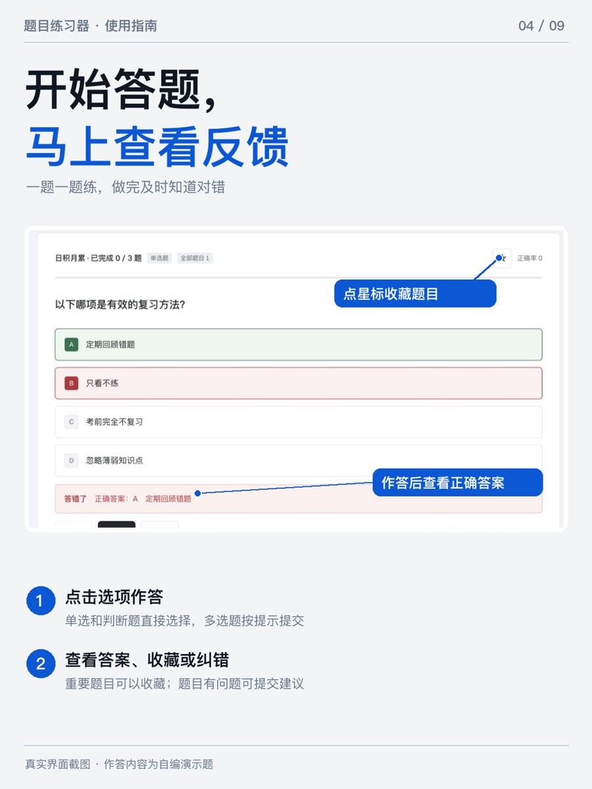
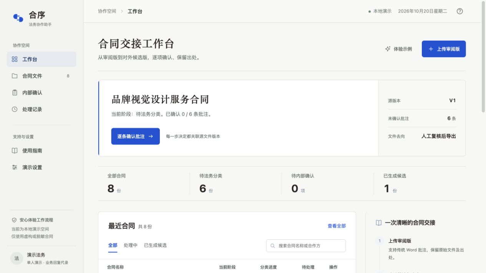
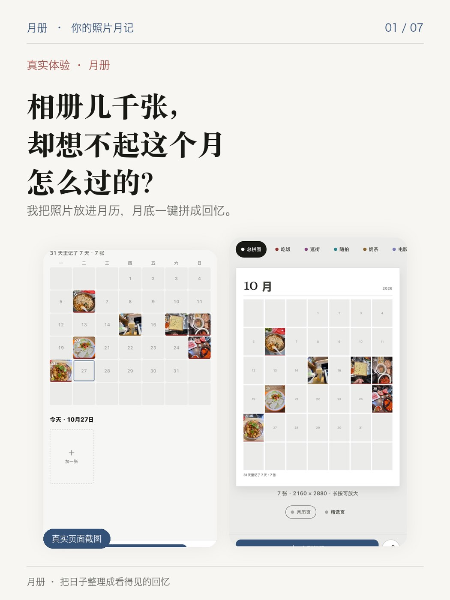
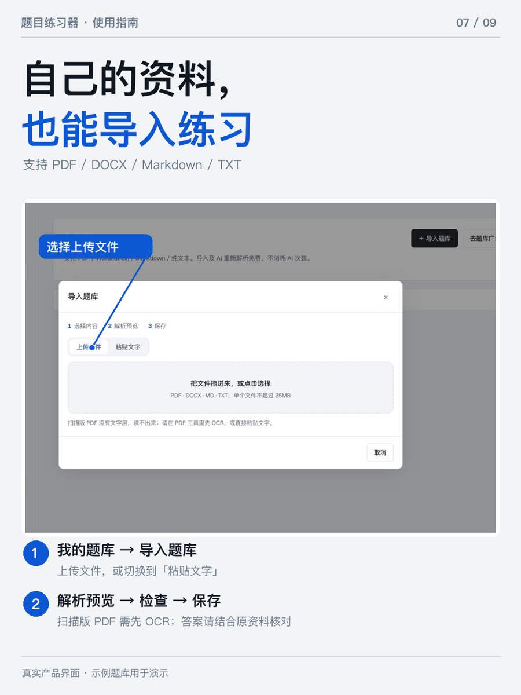
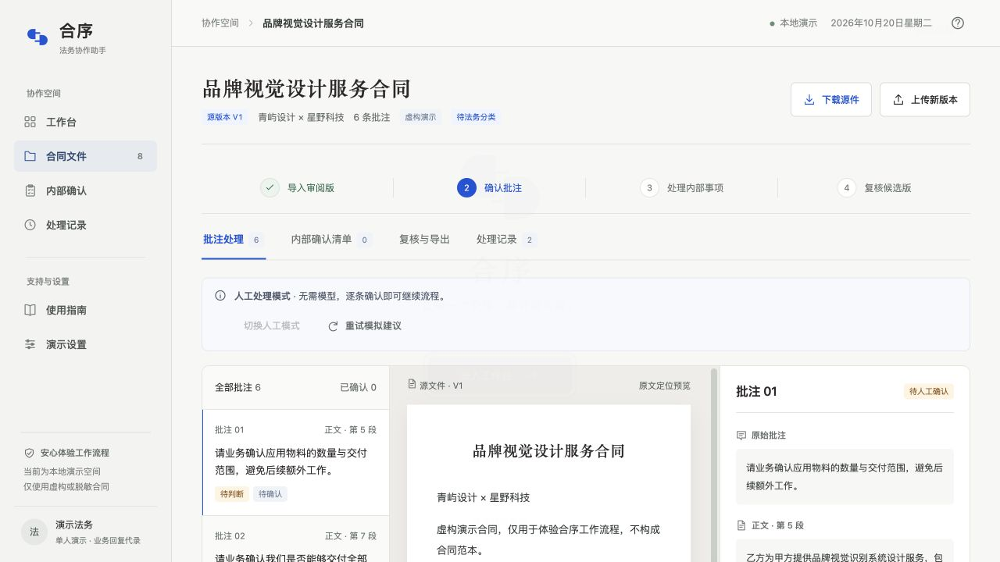
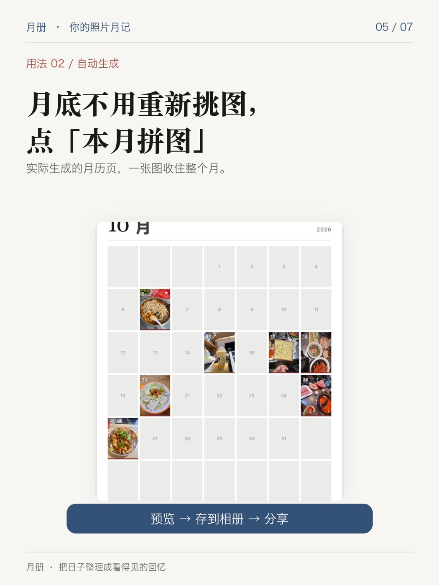

WEB PRODUCT · LIVE ITERATIONAI 产品经理实习作品集 2026
把复杂问题
拆成可验证的产品决策。
你好，我是任鹏宇。这里记录我如何从真实场景出发，设计产品流程、约束 AI 的不确定性，并用测试与数据检验判断。
CASE FILE / 01—04
SELECTED WORK · 2026
01题目练习器让复习有进度，也有反馈↗
02合序让合同审阅意见安全交接↗
03Feedback Triage让 AI 结论能回到原文↗
04月册把每天的照片装订成一个月↗
PROBLEM → DECISION → EVIDENCE
SCROLL TO EXPLORE↓
01 / SELECTED WORK
精选项目.
四个项目，展示产品落地、复杂流程、AI 评测与面向真实用户的体验迭代。每个项目都可以阅读案例或直接体验。

B2B WORKFLOW · LOCAL PILOTfeedback / triage● ● ●
原始反馈 → 可核查的主题
数据同步 / 丢失11
界面与交互9
价格与订阅8
∑ 主题数量 = 输入条数 ✓

PHOTO JOURNAL · REAL USERSCASE 01 / 04
题目练习器
让找题、练习与错题回顾成为一条连续的路径。
角色独立产品项目
阶段已上线，持续迭代
关键词用户流程 / 数据 / AI 辅助
THE CHALLENGE
大学生期末复习常在课程资料、零散题库和错题记录之间来回切换。我的目标是让用户从发现课程题目到复盘错题，尽可能在同一条流程中完成。
01 / 产品方案
设计题库广场、章节练习、模拟考试与错题本；支持导入 PDF、Word、文本资料，预览识别结果后再保存为个人题库。
02 / AI 的位置
让模型辅助解析资料与整理知识点；对输出做格式校验，规则解析作为兜底，原资料没有答案时不让 AI 猜测，并保留人工确认步骤。
03 / 数据与反馈
设置访问、开始练习、答题等行为埋点，按访客去重分析使用；题目纠错支持建议答案、说明和截图，由人工审核后修改共享题库。
EVIDENCE / 截至 2026.11.02
82套对外可见题库
178名去重访客（10.23–11.02）
51 / 26名访客分别触发开始练习 / 答题事件

下一步验证
查看在线预览
当前数据能说明产品已被访问和使用，尚不能证明留存或 AI 解析质量提升。下一轮将用真实课程资料评估识别完整率、答案错误率、人工修改量与成本。
CASE 02 / 04
合序
让合同审阅意见在法务与业务之间清晰交接。
角色产品设计与原型落地
阶段本机团队试用版
关键词B 端协作 / 风险控制 / AI 辅助
THE CHALLENGE
一份带批注的 Word 审阅版，可能同时包含内部风险提示、待业务核实的事实，以及可向交易对方表达的内容。直接转发容易让内部意见外流，也容易把“待确认”误解为“已批准”。
01 / 核心流程
导入审阅版 → 法务逐条确认批注受众与处理方式 → 业务回复事实 → 法务复核快照 → 导出用途明确的候选文件、内部清单与处理记录。
02 / 关键取舍
将“内部事项”和“对外候选”分开保存；未决项阻断导出，内容变化使旧复核失效。AI 只对虚构示例批注提供可选建议，最终决定仍由法务作出。
03 / 样本验证
在虚构合同任务中处理 6 条批注与 4 项内部事项，检查候选文件未带出原始内部意见。此项为本机流程测试，尚未完成真实用户独立使用验证。

当前边界
查看交互原型
合序尚未开放真实合同自助上传、公开注册或正式收费。后续重点是与目标法务和业务人员完成双人任务测试，记录交接耗时、未决项遗漏和误传情况。
CASE 03 / 04
Feedback Triage
让 AI 归纳反馈时，每个结论都能回到原文。
角色独立 PM
阶段网页工具与测试复盘
关键词LLM / Prompt / 评测
THE CHALLENGE
产品规划会前，PM 需要从大量用户评论中提取讨论主题。通用模型给出的归纳看似完整，却可能漏掉评论、改写引用，甚至把噪声当成主题。核心问题是让结论可核查。
01 / 产品定义
输入逐行评论，输出不超过 5 个主题及“其他”类；每个主题包含数量和一条逐字复制的原文引用。暂不做优先级、情感评分或自动写入工单。
02 / 评测方法
构造 50 条包含讽刺、错别字、跑题和中性态度的测试评论，先写预期分布，再逐项核对主题数量、引用原文与噪声归属。
03 / 迭代结果
v1 出现数量不守恒、引用被改写、噪声被升格等问题；v2 增加守恒、逐字引用和兜底规则。该测试集最终主题数量守恒，抽查的 3 条引用均命中原文。
评测关注点50 条自建测试评论
Σ = 50分类数量守恒
3 / 3抽样引用逐字命中
5 + 其他主题上限与兜底
下一步验证
查看在线工具
当前结果来自自建测试集，不能代表真实工单环境的整体准确率。下一步接入真实反馈源，补充逐条分类记录与留出集评测，并观察主题随版本的变化。
CASE 04 / 04
月册
让日常照片在月底变成一张看得见的回忆。
角色独立产品项目
阶段真实用户使用与反馈中
关键词移动端体验 / 分类整理 / 用户反馈
THE CHALLENGE
手机里有很多照片，但回顾某个月时，常要重新翻找、挑选并手动拼图。月册希望把“随手记录”和“月底回看”接成一条轻量流程。
01 / 产品方案
用户按日期加入照片，同一天可放多张；可用自定义分类整理生活片段，月底生成总月历或分类精选拼图，保存到相册分享。
02 / 体验取舍
手机网页打开即用，记录留在当前设备浏览器中。产品在使用说明里明确提醒备份，避免用户把浏览器本机保存误认为自动云端同步。
03 / 真实使用与反馈
产品已面向真实用户开放；根据反馈修复相册上传问题，并向用户询问月度整理需求。已建立使用交流群收集意见与问题，用户提供的截图显示群内有 11 名成员。

下一步验证
体验月册
继续记录相册上传问题修复后的复测结果，以及用户对月度整理的具体需求；观察首次记录、月底导出与备份流程。交流群人数不能代替实际使用指标。
02 / HOW I WORK
我的工作方式.
先定义问题和失败代价，再把判断变成能被验证的产品动作。
01
从场景出发
明确谁在什么时刻遇到问题，拆出具体任务与现有替代方案。
02
为不确定性设边界
在 AI 输出进入流程前，设计人工确认、规则兜底和失败提示。
03
用证据推动迭代
记录埋点口径、测试样本与失败模式，区分已验证结果和待验证假设。
03 / ABOUT
关于我.
我是任鹏宇，中国矿业大学法学本科在读，2029 届，正在寻找 AI 产品经理实习机会。我的项目横跨教育工具、法务协作、用户反馈分析与生活记录；它们共同关注一个问题：如何让产品给出的结果真正可信、可用、可改进。
我使用 PRD、流程图与原型梳理方案，也会用 SQL、Excel 和测试样本检验判断。希望加入重视用户场景、产品判断与实验验证的团队。
LET'S CONNECT
一起把想法做成
经得起验证的产品。
正在寻找 AI 产品经理实习机会。欢迎通过邮件联系，或下载简历了解更多项目经历。